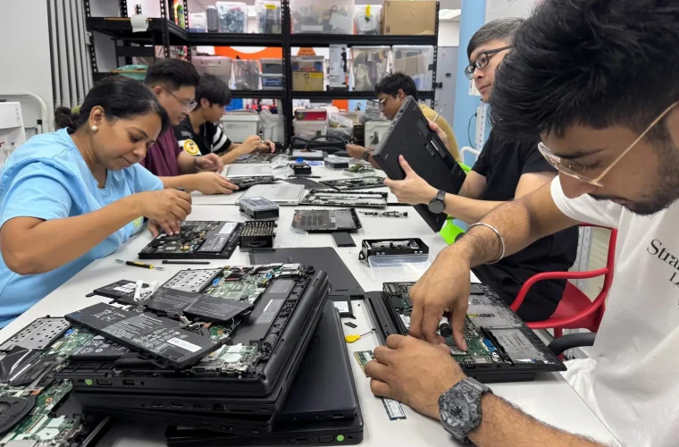
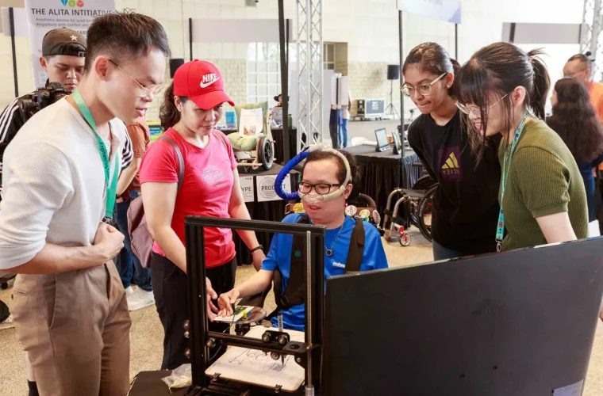

T4G2024-25 Campaign
To help cover the costs of running Engineering Good’s programmes, we have launched the Tech For Good 2024-25 (T4G2024-25) fundraising campaign, which runs from 1st October 2024 to 31st March 2025. Funds raised from the T4G2024-25 campaign will make a significant impact, enabling us to continue providing our services to those in greatest need. Together, we can build a more inclusive and equitable society where everyone has the chance to thrive.
$ 50 : Your donation will help defray the cost of parts replacement of a refurbished laptop
$ 200 : Your donation will fully cover the cost of providing a refurbished laptop to someone in need
$ 1,000 : Your donation will enable the prototyping and development of an Assistive Technology project.
Kindly make your generous donation using PayNow to:

UEN: 201408320W
Alternatively, Internet banking (FAST) or bank Telegraphic Transfer (TT) to:
DBS Bank Account Name : ENGINEERING GOOD LTD
DBS Bank Account No. : 072-115493-5
DBS Bank Swift Address : DBSSSGSG
Please add reference: T4G2024-25
To receive an e-receipt for your donation, please email finance@engineeringgood.org
This will allow us to track and process your donation efficiently.
Donations made towards this T4G2024-25 Fundraising Campaign will be kindly matched dollar-for-dollar by Tote Board Enhanced Fund- Raising Grant. Tote Board’s EFR grant supports charities, like Engineering Good, in doing more to serve the vulnerable groups in Singapore.
Engineering Good – what we do
Engineering Good Ltd (EG) is a Singapore-registered charity that brings together a community of staff, volunteers, donors, sponsors, and supporters with diverse skills, including technology and engineering, to serve disadvantaged and disability communities. We support these communities by enabling access to digital education, economic opportunities and helping them overcome daily challenges through innovative humanitarian engineering solutions. Our vision is to engineer a better and more inclusive world.
Our Tech For Good initiatives focus on these main areas: Digital Inclusion and Assistive Technology
In our Tech For Good – Digital Inclusion programme, we refurbish decommissioned corporate laptops and distribute them through community partners to support disadvantaged users to access online education, job searches, and other socioeconomic opportunities. The disadvantaged communities we support include students from low-income families, displaced workers, ex-offenders, rental flats residents, persons with chronic health issues, migrant workers, and more. By extending the lifecycle of decommissioned laptops, we play a part in the reducing e-waste and its environmental impact on Singapore.
In our Tech For Good – Accelerator and Makers programmes, we train, coach and work with youth innovators, disability sector professionals, skilled volunteers and community partners, to create open-source assistive technology solutions that help persons with disabilities participate in learning, inclusive employment, perform daily activities, and empower them to live more fulfilling and independent live

